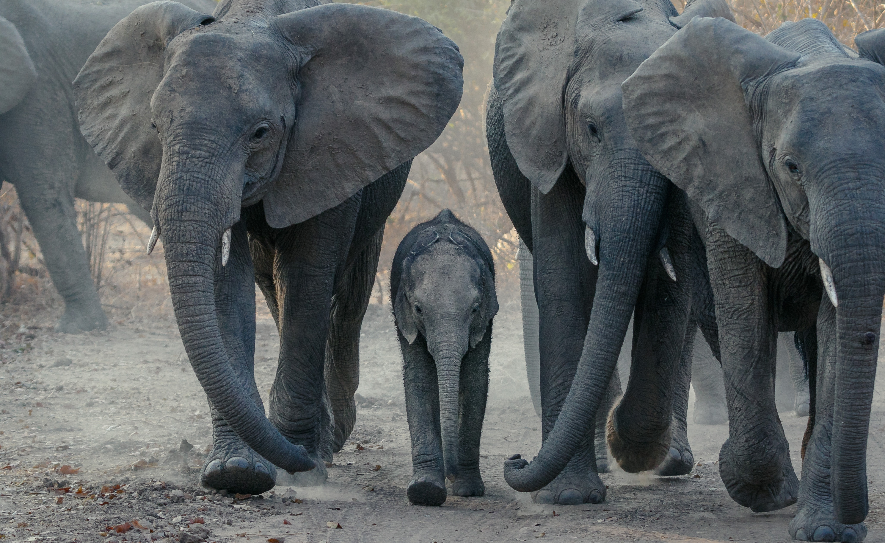
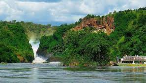
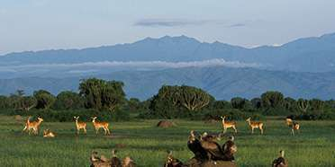
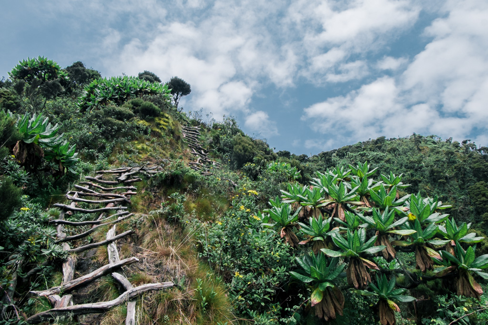

20 Days Wildlife and Hiking Safari Tour Uganda and Rwanda
Plan and book long safari adventure to Uganda’s top hidden germ destinations in Uganda for Uganda Safari experience that includes the mountain gorillas, wildlife watching , cultural experiences, chimpanzee tracking with local experienced safari guide. Contact the experts of salvaje gorilla safaris to help you tailor 20 days Uganda Safari staying in Luxury Lodges , Mid Range with unique experiences.
Planning to transfer to Uganda and Rwanda for a Safari Adventure Tour visiting River Nile, Sipi Falls, Mountain Elgon, Pian Upe Game Reserve, Kidepo National Park, Murchison Falls National Park, Kibale Forest National park, Queen Elizabeth National Park, Bwindi Forest National Park, Mgahinga National Park, Mountain Sabinyo Volcano, Volcanoes National Park, Book the 20 Days Wildlife and Hiking Safari Tour to enjoy the best safari Adventure Tours in Rwanda and Uganda.
Day 1: Transfer to Jinja – zip lining
Our guide will pick you up from your hotel in Entebbe/Kampala at around 8am and then transfer to Lugazi. From Lugazi town you will drive off the main road to Mabira forest where ziplining is done.
The guides will get you ready in your harnesses and helmets and then walk to the start of the activity. Zipling here is done in Mabira forest where you will be moving from one tree to another (the trees are between 30-40 meters tall).
You will move through 5 lines and as you do the activity, you will expect to see some monkeys that live in the forest and various bird species. The activity will take between 6-7 hours. After the activity, you will transfer to Jinja. Check in at a guest house where you will have dinner and spend the night.
Day 2: Visit the source of river Nile and transfer to Mbale
After breakfast at the guesthouse, you will take a boat on river Nile to the source. As you cruise, you will expect to spot various bird species that live in the bushes around the river. You will then return to the guesthouse for lunch and then transfer to Mbale. Check in at Mbale resort hotel where you will have dinner and spend the night.
Day 3: Transfer to sipi falls and Mount Elgon
After breakfast at the hotel, you will drive to start of the sipi falls hike. The sipi falls is comprised of 3 waterfalls each flowing from a different altitude.
The highest fall drops from an altitude of 100m referred to as the main fall since it is the last fall in the series, this fall is a little bigger than the other two falls, but all give Uganda a beautiful scenery. In fact most people say that sipi falls are the ‘most romantic falls’ in Uganda which is evidenced by the wonderful falls.
This area is majorly where most hikes to Mt. Elgon are started from. Hiking up to these falls gives a beautiful scenic view, like Lake Kyoga, the karamoja low lands, coffee plantations and other surrounding areas. You will then descend and then transfer to Mount Elgon. Check in at kapkwai UWA bandas where you will have dinner and spend the night.
Day 4: Nature walk and hike to waterfalls
After breakfast at the bandas, you will do a nature walk through the Mount Elgon national park tropical forests which are in the lower altitudes of the mountain. The walk will take around 4-5 hours and will lead you to some of the waterfalls in the park.
As you move through the forest, you will expect to spot some bird species that live in the forests, plant species and also have beautiful views of the surrounding environment. You will then descend to the base, have lunch. Dinner and overnight as above.
Day 5: Transfer to pian upe game reserve with after evening game drive
After breakfast at the bandas, you will transfer to pian upe game reserve. Check in at the UWA bandas and have lunch. Later in the evening you will go for a game drive through the reserve, there various trails to follow as you drive.
The Pian Upe Wildlife Reserve is a conservation area in the Karamoja sub region of northeastern Uganda. It is the second largest conservation protected area in Uganda. Most of the reserve is covered by undisturbed grassland and wooded grassland. Small areas of riverine woodland, kopjes also exist

Some land is cultivated, and especially the area near the Greek River is threatened by conversion. The area once supported healthy populations of lions, elephants, black rhinos and giraffes, these are now locally extinct. Some of the animals that live in the reserve include; Carnivores; Jackals, Civets, Spotted hyenas, Leopards, Cheetah. Primates; Vervet monkeys, Patas monkeys, Olive baboons. Ungulates; Topi, Cape buffalo, eland, Roan antelope, Blue and common duIker, dIk-dIk, Waterbuck, Ugandan kob, mountain reebuck, porcupine, Hare among many others.
The park is a home to various savannah bird species like ostriches. As you drive through the reserve, you will expect to see some of these animals. Dinner and overnight at the UWA bandas.
Day 6: Morning game drive and transfer to Moroto
After breakfast, you will take an early morning game drive through the reserve where you will expect to see animals like; cheetahs, buffalos, hyenas, waterbucks, kobs, porcupine, dik dik and various bird species that live in the reserve.
This activity will take you around 4 hours and then transfer to Moroto. Check in at karatunga guest house where you will have dinner and spend the night.
Day 7: Hike mount Moroto and bush camping
After breakfast at the guest house, you will drive to mount Moroto hike starting point. Mount Moroto Lies in the extreme east of Uganda and is the most accessible place to see some of the dry northeastern “special”, many at the western edge of their ranges here in Karamoja province.
One of a chain of volcanoes along the Kenyan border that begins with Mount Elgon in south and includes Mountains Kadam and Morungole, Moroto is a forest reserve protecting a range of habitats from arid thorn savanna to dry montane forest. Although a long hike is required to reach the higher areas, excellent arid thorn savanna and rocky slopes are accessible from the town at the foot of the mountain.
You will start the hike to the top of the mountain through the savannah vegetation where you will expect to see some monkey species and bird species that live in the forest. you will also have beautiful views of the Moroto highlands and the surrounding vegetation. The hike to the top, will take you around 6-7 hours. You will then your tents, have dinner and spend the night.
Day 8: Transfer to Kidepo valley and evening game drive
You will take up to the beautiful scenery of the Moroto highlands, have breakfast and then take photos. You will then descend the mountain, this will take about 3 hours. You will then transfer to Kidepo valley national park in Kaabong.
This drive will take you around 4 hours. Check in at UWA bandas where you will have your accommodation. Later in the evening, you will do a game drive around the park where you will expect to see animals and birds.
Kidepo valley national park covers an area of 1442square kilometers and is a haitat to about 86 mammal species including spotted hyena, lion, cheetah, leopard, wild dog, elephant, giraffe, zebra, African buffalo, bat-eared foxes, Rothschild’s giraffe — as well as almost 500 bird species. Dinner and overnight at the UWA bandas.
Day 9: Game drive
After breakfast at the bandas, you will go for an early morning game drive through the park. Most of the game drive in the park is done in the narus valley where most of the animals come in search for water and pasture.

Some of the animals you will expect to see include; elephants, lions, buffalo, cheetah, leopard, waterbucks, eland, zebra, giraffes, dik dik, kobs, among many others, and various bird species like the Kori bustard, Abyssinian ground hornbill, secretary bird, ostrich, carmine, yellow-billed and Jackson’s hornbills among others.
The activity will take you between 4-6 hours. Return to the bandas, have lunch and rest the rest of the day. Dinner and overnight at the bandas.
Day 10: Hike to the Ik people
After breakfast at the bandas, you will drive for about an hour to the morungule hike starting point. You will then start the hike to the Ik community who stay in the morungole highlands. The hike will take about 5-6 hours or even more depending on the hikers speed and fitness, it’s a full day activity.
The Ik people are an ethnic group numbering about 10,000 people living in the mountains of northeastern Uganda near the border with Kenya, next to the more populous Karamojong and Turkana peoples. The Ik were displaced from their land to create the Kidepo Valley National Park and consequently suffered extreme famine.
You will reach the Ik community and learn about their culture which is so interesting. When you visit the community, it is good to support the community by buying their locally made crafts or even donate some things like clothes, soap, sugar, salt and other things to them. This will make them appreciate tourism in their region. You will then descend and transfer back to the UWAbandas where you will refresh, have dinner and spend the night.
Day 11: Transfer to Murchison falls National Park
After breakfast at the UWA bandas, you will check out and then transfer to Murchison falls national park. The drive will take you around 7-8 hours with a stopover in Gulu for lunch.
Murchison falls national park covers an area of 3,893 square kilometers and is managed by the Uganda wildlife authority, and is divided by the Victoria Nile. Murchison falls conservation area and the adjacent Bugondo Forest Reserve have 76 species of mammals as well as Uganda’s largest population of Nile crocodiles.
450 bird species are present ranging from easy variety of water birds, including the rare shoe-billed stork, Budongo’s 59 “restricted range” species, dwarf kingfisher, Goliath heron, white-thighed hornbill and great blue turaco. Check in at red chili camp, where you will have dinner and spend the night.
Day 12: Game drive – visit to the top of the falls
After breakfast at the camp, you will go for an early morning game drive in the park. There are various trails in the park to follow when driving and you will expect to spot animals like; elephants, lions, leopards, buffalos, waterbucks, hyenas, dik dik, giraffes, elands, zebra, kobs, jacksons hartebeests, among others.

You will also expect to spot some savannah birds like ostrich, dwarf kingfisher, Goliath heron, white-thighed hornbill, African fish eagle, among others. The activity will take you about 4-6 hours depending on how long you would wish to drive around. You will return to the camp for lunch and then drive to the top of the magnificent Murchison falls national park. Dinner and overnight at the camp.
Day 13: Transfer to kibale forest National Park
After breakfast at the camp, you will then transfer to kibale forest national park, a journey that will take you between 6-7 hours with a stopover along the way for lunch.
Kibale National Park is a national park in Western Uganda, protecting moist evergreen rain forest. It is 766 square kilometres in size and is located between 1,100 metres to 1,600 metres in elevation.
Despite encompassing primarily moist evergreen forest, it contains a diverse array of landscapes. There are 13 species of primates in Kibale National Park. The park protects several well-studied habituated communities of common chimpanzee, as well as several species of Central African monkey including the Uganda mangabey, the Ugandan red colobus and the L’Hoest’s monkey, the black-and-white colobus and the blue monkey. Other terrestrial mammals that are found within Kibale National Park include red and blue duikers, bushbucks, sitatungas, bushpigs, giant forest hogs, common warthogs, and African buffalo among others. The park is a home to about 325 bird species.
You will then check in at Isunga lodge where you will have dinner and spend the night.
Day 14: Chimpanzee tracking and transfer to queen Elizabeth National Park
After breakfast at the lodge, you will drive to the park headquarters where you will be briefed by the park guide about the park, and the activity (do’s and don’ts when tracking). You will then start the trek in the forest with the park guide. The trek will take about 4-6 hours depending on where the chimps will be that day.
As you trek the chimps, you will expect to see other primates that live in the park and various forest bird species. You will expect to spot the chimps jumping from one tree to another as they go about their daily activities. Unlike the gorillas, you will have to move with the chimps as you track them because you will not find them in one place. You will then return to the lodge, have lunch, check out and then transfer to Queen Elizabeth national park.
The drive to queen Elizabeth will take you around 2-3 hours. Check in at bush lodge where you will have dinner and spend the night.
Day 15: Game drive and transfer to Bwindi impenetrable National Park
After breakfast at the lodge, you will do an early morning game drive around the park where you will expect to see animals like; lions, elephants, buffalos, waterbucks, kobs, warthogs, leopard, among others as well as various bird species. The activity will take you about 4 hours. You will then return to the lodge, have lunch and then check out. Transfer to Bwindi impenetrable national park.
Check in at gorilla mist camp where you will have dinner and spend the night.
Day 16: Gorilla trekking and transfer to Mgahinga National Park
After breakfast at the lodge, you will drive to the park headquarters (depending on the sector you will be tracking), have a briefing about the activity by the park guide and also have your permits verified.

You will then start the trek through the thick tropical forests to look for the gentle giants. The trek will take between 4-6hours depending on where the gorillas will be that day and as you move, you will expect to spot some monkeys and different bird species that live in the forest.
You will be given an hour to see the gorillas as they go about their daily life, and also take photos. You will then return to the lodge, have lunch and check out. Transfer to kisoro, check in at travelers rest hotel where you will have dinner and spend the night.
Day 17: Hike Sabyinyo Mountain and transfer to Rwanda
After breakfast at the hotel you will drive to Mgahinga national park headquarters where you will be briefed by the park guide about the park and the hike which will take you about 5 hours to reach the top.
You will then start the hike, as you hike, you will expect to spot some monkey and bird species that live in the park. The hike is so tiresome but also so rewarding. The top of the mountain will meet you with beautiful views of the Virunga massif, you will spot some of the mountains of the Virunga.
You will then descend back to the base where the guide will be waiting for you and then transfer back to the hotel, refresh and transfer to volcanoes national park where you will cross the Uganda-Rwanda border. Check in at Da Vinci Lodge where you will have dinner and spend the night.
Day 18: Golden monkey tracking in Volcanoes National Park
After breakfast at the lodge, you will drive to volcanoes national park headquarters where you will be briefed by the park guide about the activity and also have your trekking permits verified.

You will then drive to the trekking starting point where you will start the activity through some tree plantations to the tropical forest area of the Virunga forest. The activity takes about 3 hours. You will expect to see the monkeys jumping from one bamboo tree to another as they go about their daily life. Some fitness level is requires because you will be moving with the monkeys. You will then transfer back to the lodge.
Day 19: Relaxing in the cold weather of Volcanoes National Park
You will have a late breakfast at the lodge and then relax around as you enjoy the cold weather of the area. All meals at the lodge. You might decide to go to ibiwacyu cultural village where you will learn about the Kinyarwanda culture and traditions. And if you are a couple, you will have a chance to participate in the traditional marriage. Overnight at the lodge.
Day 20: Transfer to Kigali with a city tour and drop at Kigali airport
fter a late breakfast at the lodge, you will transfer to Kigali a distance of about 3 hours. When in Kigali, you will do a city tour and also visit the Kigali genocide museum where you will learn about the Rwanda genocide that claimed the lives of many Rwandans. You will also visit a massive grave where some of the people are buried. The guide will then drop you at your hotel in Kigali or at the airport for your flight back home.
PLEASE NOTE
- The safari indicated here is essentially an offer. Changes in the course of the journey, the duration of your tour, the number of travelers, as well as the choice of accommodation are subject to availability, although we always endeavor to stick as closely as possible to this program. For the majority of itineraries, we can offer luxury, mid range or budget versions of this safari upon request.
- Sometimes it is not possible to adhere to the travel plan as described in this itinerary, due to weather and road conditions, authority regulations, organizational requirements, etc. Occasionally, the planned route of the tour has to change according to the situation on the ground. We must therefore explicitly refuse liability for adherence to the journey plan.
SAFARI INCLUDES
- All accommodation on Half Board (HB), Full Board (FB) or Bed and Breakfast (B&B) basis as quoted in the text
- Safari vehicle and fuel
- English speaking tourist guide
- Game drives and walks
- Entrance fees to the national parks. All boat tours
- Taxes
- Free mineral water in the vehicle during the tour
- AMREF emergency evacuation insurance
- Gorilla Permit
SAFARI EXCLUDES
- International flights
- Visa fees
- Drinks / alcoholic drinks / additional meals
- Tips
- Activities not part of the described program
- International travel insurance
- Items of personal nature / souvenirs